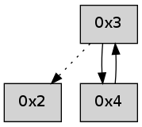

>> << IDX [start] -100 -25 -5 +0 +5 +25 +100 [225.06261611]
 Previous packets
----------------------------------------------------------------------
220.030830 beacon01(adaf) #0 coord=01,02 cycle=176.0ms assoc
-- color-indic=0 64 63 42
220.040774 beacon02(adaf) #0 coord=01,02 cycle=176.0ms assoc 64 4a 6c
220.052354 [Hello(2): seq=492 sysInfo= stat=]
----------------------------------------------------------------------
220.226916 beacon01(adaf) #0 coord=01,02 cycle=176.0ms assoc
-- color-indic=0 64 cc 61
220.236859 beacon02(adaf) #0 coord=01,02 cycle=176.0ms assoc 64 e5 4f
----------------------------------------------------------------------
220.423000 beacon01(adaf) #0 coord=01,02 cycle=176.0ms assoc
-- color-indic=0 64 f5 6c
220.432944 beacon02(adaf) #0 coord=01,02 cycle=176.0ms assoc 64 dc 42
220.444512 [Hello(2): seq=493 sysInfo= stat=]
----------------------------------------------------------------------
220.619085 beacon01(adaf) #0 coord=01,02 cycle=176.0ms assoc
-- color-indic=0 64 be 7b
220.629028 beacon02(adaf) #0 coord=01,02 cycle=176.0ms assoc 64 97 55
----------------------------------------------------------------------
220.815171 beacon01(adaf) #0 coord=01,02 cycle=176.0ms assoc
-- color-indic=0 64 87 76
220.825116 beacon02(adaf) #0 coord=01,02 cycle=176.0ms assoc 64 ae 58
220.836697 [Hello(2): seq=494 sysInfo= stat=]
----------------------------------------------------------------------
221.011255 beacon01(adaf) #0 coord=01,02 cycle=176.0ms assoc
-- color-indic=0 64 70 ef
221.021198 beacon02(adaf) #0 coord=01,02 cycle=176.0ms assoc 64 59 c1
----------------------------------------------------------------------
221.207341 beacon01(adaf) #0 coord=01,02 cycle=176.0ms assoc
-- color-indic=0 64 49 e2
221.217286 beacon02(adaf) #0 coord=01,02 cycle=176.0ms assoc 64 60 cc
221.228877 [Hello(2): seq=495 sysInfo= stat=]
----------------------------------------------------------------------
221.403425 beacon01(adaf) #0 coord=01,02 cycle=176.0ms assoc
-- color-indic=0 64 02 f5
221.413369 beacon02(adaf) #0 coord=01,02 cycle=176.0ms assoc 64 2b db
----------------------------------------------------------------------
221.599511 beacon01(adaf) #0 coord=01,02 cycle=176.0ms assoc
-- color-indic=0 64 3b f8
221.609455 beacon02(adaf) #0 coord=01,02 cycle=176.0ms assoc 64 12 d6
221.621024 [Hello(2): seq=496 sysInfo= stat=]
----------------------------------------------------------------------
221.795596 beacon01(adaf) #0 coord=01,02 cycle=176.0ms assoc
-- color-indic=0 64 94 db
221.805539 beacon02(adaf) #0 coord=01,02 cycle=176.0ms assoc 64 bd f5
----------------------------------------------------------------------
221.991680 beacon01(adaf) #0 coord=01,02 cycle=176.0ms assoc
-- color-indic=0 64 ad d6
222.001623 beacon02(adaf) #0 coord=01,02 cycle=176.0ms assoc 64 84 f8
222.013202 [Hello(2): seq=497 sysInfo= stat=]
----------------------------------------------------------------------
222.187765 beacon01(adaf) #0 coord=01,02 cycle=176.0ms assoc
-- color-indic=0 64 e6 c1
222.197709 beacon02(adaf) #0 coord=01,02 cycle=176.0ms assoc 64 cf ef
222.211980 ..2e2100 -- association-request >>>> 0002
222.214234 0002 -- MAC-command=14 payload=00 21 2e ff ff 00 54 a1 01 02 00 6e 0b
222.216250 0001 -- MAC-command=15 payload=00 21 2e ff ff 00 54 a1 03 00 00 00 69 53
222.218946 ..2e2100->..2e2100 -- association-response successful addr=0003
----------------------------------------------------------------------
222.383849 beacon01(adaf) #0 coord=01,02,03 cycle=240.0ms assoc
-- color-indic=0 64 e8 ae
222.393797 beacon02(adaf) #0 coord=01,02,03 cycle=240.0ms assoc 64 bf 92
222.403798 beacon03(adaf) #0 coord=01,02,03 cycle=240.0ms assoc 64 62 c3
222.415371 [Hello(2): seq=498 sysInfo= stat=]
222.419446 ..2e2100 -- association-request >>>> 0002
222.421987 0002 -- MAC-command=14 payload=00 21 2e ff ff 00 54 a9 01 02 00 02 b7
222.424314 0001 -- MAC-command=15 payload=00 21 2e ff ff 00 54 a9 04 00 00 00 28 d3
222.427658 ..2e2100->..2e2100 -- association-response successful addr=0004
----------------------------------------------------------------------
222.653941 beacon01(adaf) #0 coord=01,02,03,04 cycle=304.0ms assoc
-- color-indic=0 64 2e 55
222.663892 beacon02(adaf) #0 coord=01,02,03,04 cycle=304.0ms assoc 64 3e 30
222.673892 beacon03(adaf) #0 coord=01,02,03,04 cycle=304.0ms assoc 64 71 9c
222.683893 beacon04(adaf) #0 coord=01,02,03,04 cycle=304.0ms assoc 64 af c1
222.695508 [Hello(3): seq=0 asym=2 mpr= sysInfo= stat=2:0,0,0,0]
----------------------------------------------------------------------
222.998036 beacon01(adaf) #0 coord=01,02,03,04 cycle=304.0ms assoc
-- color-indic=0 64 c0 1f
223.007989 beacon02(adaf) #0 coord=01,02,03,04 cycle=304.0ms assoc 64 d0 7a
223.017989 beacon03(adaf) #0 coord=01,02,03,04 cycle=304.0ms assoc 64 9f d6
223.027989 beacon04(adaf) #0 coord=01,02,03,04 cycle=304.0ms assoc 64 41 8b
223.039604 [Hello(4): seq=0 asym=3 sysInfo= stat=3:0,0,0,0]
----------------------------------------------------------------------
223.342133 beacon01(adaf) #0 coord=01,02,03,04 cycle=304.0ms assoc
-- color-indic=0 64 5b e3
223.352084 beacon02(adaf) #0 coord=01,02,03,04 cycle=304.0ms assoc 64 4b 86
223.362085 beacon03(adaf) #0 coord=01,02,03,04 cycle=304.0ms assoc 64 04 2a
223.372085 beacon04(adaf) #0 coord=01,02,03,04 cycle=304.0ms assoc 64 da 77
223.383746 [Hello(3): seq=1 sym=4 asym=2 sysInfo= stat=4:0,0,0,0/2:0,0,0,0]
----------------------------------------------------------------------
223.686230 beacon01(adaf) #0 coord=01,02,03,04 cycle=304.0ms assoc
-- color-indic=0 64 b5 a9
223.696181 beacon02(adaf) #0 coord=01,02,03,04 cycle=304.0ms assoc 64 a5 cc
223.706182 beacon03(adaf) #0 coord=01,02,03,04 cycle=304.0ms assoc 64 ea 60
223.716182 beacon04(adaf) #0 coord=01,02,03,04 cycle=304.0ms assoc 64 34 3d
223.727808 [Hello(4): seq=1 sym=3 sysInfo= stat=3:1,0,0,0]
----------------------------------------------------------------------
224.030326 beacon01(adaf) #0 coord=01,02,03,04 cycle=304.0ms assoc
-- color-indic=0 64 87 76
224.040277 beacon02(adaf) #0 coord=01,02,03,04 cycle=304.0ms assoc 64 97 13
224.050279 beacon03(adaf) #0 coord=01,02,03,04 cycle=304.0ms assoc 64 d8 bf
224.060278 beacon04(adaf) #0 coord=01,02,03,04 cycle=304.0ms assoc 64 06 e2
224.071943 [Hello(3): seq=2 sym=4 asym=2 sysInfo= stat=4:1,0,0,0/2:0,0,0,0]
----------------------------------------------------------------------
224.374422 beacon01(adaf) #0 coord=01,02,03,04 cycle=304.0ms assoc
-- color-indic=0 64 69 3c
224.384373 beacon02(adaf) #0 coord=01,02,03,04 cycle=304.0ms assoc 64 79 59
224.394375 beacon03(adaf) #0 coord=01,02,03,04 cycle=304.0ms assoc 64 36 f5
224.404375 beacon04(adaf) #0 coord=01,02,03,04 cycle=304.0ms assoc 64 e8 a8
224.416004 [Hello(4): seq=2 sym=3 sysInfo= stat=3:2,0,0,0]
----------------------------------------------------------------------
224.718518 beacon01(adaf) #0 coord=01,02,03,04 cycle=304.0ms assoc
-- color-indic=0 64 8b 63
224.728470 beacon02(adaf) #0 coord=01,02,03,04 cycle=304.0ms assoc 64 9b 06
224.738470 beacon03(adaf) #0 coord=01,02,03,04 cycle=304.0ms assoc 64 d4 aa
224.748470 beacon04(adaf) #0 coord=01,02,03,04 cycle=304.0ms assoc 64 0a f7
224.760127 [Hello(3): seq=3 sym=4 asym=2 sysInfo= stat=4:1,0,0,0/2:0,0,0,0]